Plugin Version: 2.0.16
Plugin Version: 2.0.16
Overview
Cases List Builder is a plug-in designed to allow users to customize the content that is available in their Cases List. Using this plugin, the columns in the Cases List can be customized to display information from DynaForm fields and case variables which are stored in Report Tables or from PM Tables. New columns can be added to the Inbox, Draft, Participated, Unassigned, Pause or Cancelled options. Moreover, it is also possible to change the labels and alignment of the columns. An example of a customized Case List is shown in the following image:

Requirements
- ProcessMaker 2.x and later.
Browser Compatibility:
- Mozilla Firefox 3.6 and later.
- Internet Explorer 7 and later.
- Chrome
Note: For the moment the Cases List Builder plugin doesn't work on Solr Servers.
Installation and Configuration
Once the Enterprise Edition is installed and activated, the Cases List Builder should be available to be used, without any additional configuration.
Go to ADMIN > Settings to access the Cases Lists option in the left panel:

A list of columns in the cases list will be displayed:
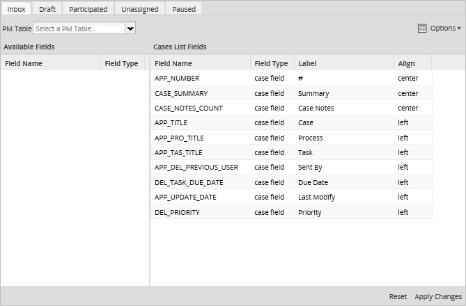
Cases List Builder Interface
In the tabs at the top, select which cases folder to customize: Inbox, Draft, Participated, Unassigned or Paused. Each cases folder has an individual configuration. If three new columns are added to the Inbox, those columns will not appear in the other cases folders.
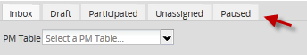
Under these tabs, find the following options:
- PM Table: Select a PM Table or Report Table to be queried for information to be displayed in the cases list. Note that only tables which have an APP_UID field to hold the case unique ID will be displayed, because each record in the table has to be linked to a particular case.
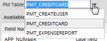
- Note: The fields from only one PM Table or Report Table can be used to populate a Cases List. If needing to use fields from multiple tables, then combine those fields into one table.
- Available Fields: A list of the fields from the selected PM Table or Report Table, which are available to be added as columns in the custom cases list.

- Cases List Fields: Displays the fields which are used as columns in the cases list.
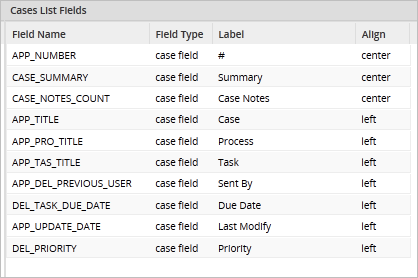
To add a field from the selected table to the cases list, select the field in the left panel and then drag it to the right panel while holding down on the mouse button, then release the mouse button to drop the field in the Cases List Field.

The field will then be added in the Case List Fields column:

To add more than one field at a time, select multiple fields in the left panel. To select additional fields, hold down on the CTRL key while clicking on the fields. All the fields between two fields can be selected by holding down on the SHIFT key while clicking on a second field. The UP and DOWN arrow keys can also be used to select multiple fields while holding down on the SHIFT key. Once the fields are selected, drag them as a group from the left panel and drop them in the right panel.

To remove fields from the Cases List, simply drag them from the Cases List Fields panel and drop them in the Available Fields panel. The label and the alignment of each field in the Cases List can be modified:
- - Label: Give a custom name to the column by changing its label
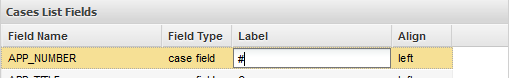
- - Align: Select the alignment of the column:
- The column label may be aligned left, center or right:
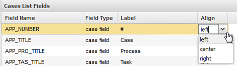
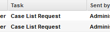 Align Right | 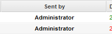Align Center | 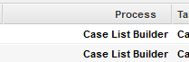 Align Left |
|---|
The order of the fields in the cases list can also be changed by clicking on a field and dragging it up or down in the list of fields.
To restore the original list of fields or restore their original labels, select from the Options dropdown in the upper right-hand corner:
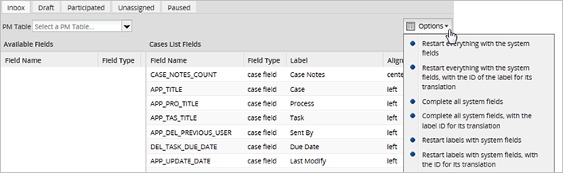
- Restart everything with the system fields: Removes all custom fields included in the Available Fields list and restores the system fields in their original order.
- Restart everything with the system fields, with the ID of the label for its translation: Removes all custom fields and restores the system fields in their original order with their original labels.
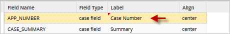
- Complete all system fields: Adds any system fields which were removed to the end of the list of Cases List Fields.
- Complete all system fields, with the ID of the label for its translation: Adds any system fields which were removed to the end of the list of Cases List Fields and restores the original labels of those system fields.
- Restart labels with system fields: Restores the original labels to all system fields. Custom fields that do not have a label will have the field name inserted in the label.
- Restart labels with system fields, with the ID of the label for its translation: Restores the original labels to all system fields. Custom fields that do not have a label will have the field name inserted in the label.
- In the following example APP_DEL_PREVIOUS_USER and the custom field CASHAMOUNT do not have labels:

- Select the Restart labels with system fields option and labels will be:\

Example adding a field to the Cases List
In this example, a report table is created and one of its fields is added to the Inbox cases list.
Creating a Report Table
First, create a Report Table named TMP_EXAMPLE_CLB which will hold a list of departments. Go to ADMIN > Settings > PM Tables. Click on New and select New Report Table. The add the fields DEPT and DEPT_LABEL to the Report Table, which will be populated by fields from a DynaForm when cases are run.

Adding the field to the Cases List
After creating the new Report Table, then go to ADMIN > Setting > Cases Lists and select the Inbox tab at the top to customize it:

Then select the TMP_EXAMPLE_CLB table from the list of available tables in the PM Table dropdown:

The fields in the TMP_EXAMPLE_CLB table will appear in the list of Available Fields.

Select the DEPT_LABEL field and drag it to the Cases List Field panel on the right.
Using the customized Cases List
When new cases are created, their data will automatically be added to the TMP_EXAMPLE_CLB table. In this particular example, the cases contain a dropdown box to select a department.
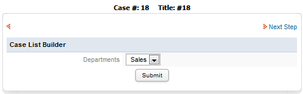
Once a department is selected in the DynaForm and it is submitted, a record will be written to the TMP_EXAMPLE_CLB table with that data. When users go to HOME > Draft, they will see the department selected for each case in the cases list.

Using a PM Table
A PM Table can be used to populate custom columns in the Cases List when:
- The PM Table exists in the workflow database of the current workspace.
- The PM Table has an APP_UID field, which holds the unique IDs for cases from the current workspace.

The unique IDs for the cases can be obtained in the wf_
Another way to update the PM Table is to create a trigger in ProcessMaker that will write the case ID and other data from the current case to a PM Table while cases are being run. For example, the following trigger code writes the unique ID of the current case, which is stored in the @@APPLICATION system variable, to a PM Table named PMT_CLIENTS. It also writes data from the FirstName, LastName and Amount fields from a DynaForm to the PMT_CLIENTS table.
To obtain the APP_UID of the process, create a trigger on which the value of it can be obtain its value with the following SQL query:
@@APPLICATION . "', '" . @@FirstName . "', '" . @@LastName . "', " . @@Amount . ")");
Note that the case ID in the APP_UID field is a string of 32 characters, so it must be enclosed in single quotation marks in the SQL INSERT statement. In contrast, the AMOUNT field is a number field, so it does not need to be enclosed in single quotation marks.